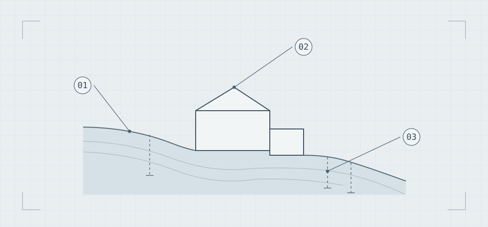

POPES ROAD,
TAKANINI.
A desktop planning assessment and a concept feasibility study looked at what could be done with the existing property before committing to design.

- 01 Mapped hazards
- 02 Building footprint
- 03 Vehicle access
Fictional parcel. The drawing does not depict the Popes Road property and is not to scale.
Start with what’s already there.
The assessment identified improvements to the existing property as the clearest option to investigate. Flooding was the main constraint. The review did not establish subdivision potential, an entitlement to another dwelling or a date for urban rezoning.
What the planning rules and site constraints meant.
We reviewed zoning, mapped flooding, access, servicing and airport height controls. The report distinguished the rules in force at the time from proposed changes and longer term growth plans.
How four options might fit.
We compared refurbishing the existing home, extending it, adding a minor dwelling and replacing the main house. Indicative layouts tested siting and scale, and showed where survey, flood analysis, safe access and servicing checks would inform detailed design.
KAIPARA ROAD,
CLEVEDON.
KOVA assessed site feasibility and engaged surveyors to support the resource consent process.

- 01 Site boundary
- 02 Townhouse footprints
- 03 Access route
Fictional study drawing. It does not depict the Kaipara Road property and is not to scale.
From feasibility to approval.
Resource consent was granted. The project brought the early planning assessment and survey inputs into the consent process.
Understand the site before progressing.
KOVA looked at the site from a planning perspective to identify what needed to be checked before progressing to consent.
Bring survey information into the planning process.
KOVA engaged surveyors and coordinated their input as the project moved from feasibility into the resource consent process.
SANDSTONE ROAD,
WHITFORD.
KOVA took the project from site feasibility through the resource consent process, with survey and geotechnical input.

- 01 Ground profile
- 02 Building setting
- 03 Investigation points
Fictional study drawing. It does not depict the Sandstone Road property and is not to scale.
Planning, survey and geotechnical input.
Resource consent was granted. Survey and geotechnical specialists supported the project as it moved from the initial feasibility assessment to the consent decision.
Set the direction for the consent work.
KOVA assessed the site at desktop feasibility stage and identified where specialist input was needed before progressing.
Bring levels and ground conditions into the assessment.
KOVA brought in surveyors and geotechnical specialists and coordinated their inputs through the resource consent process.